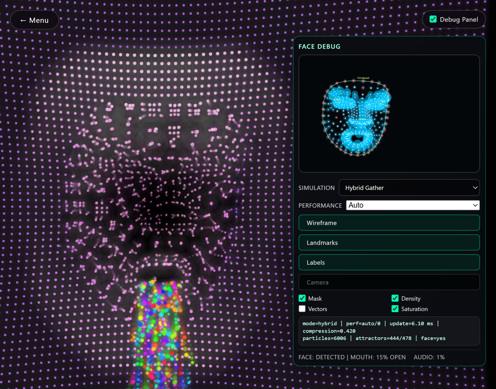
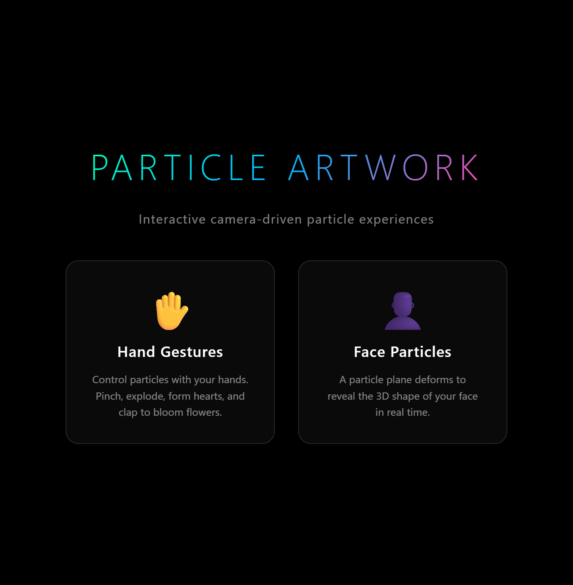
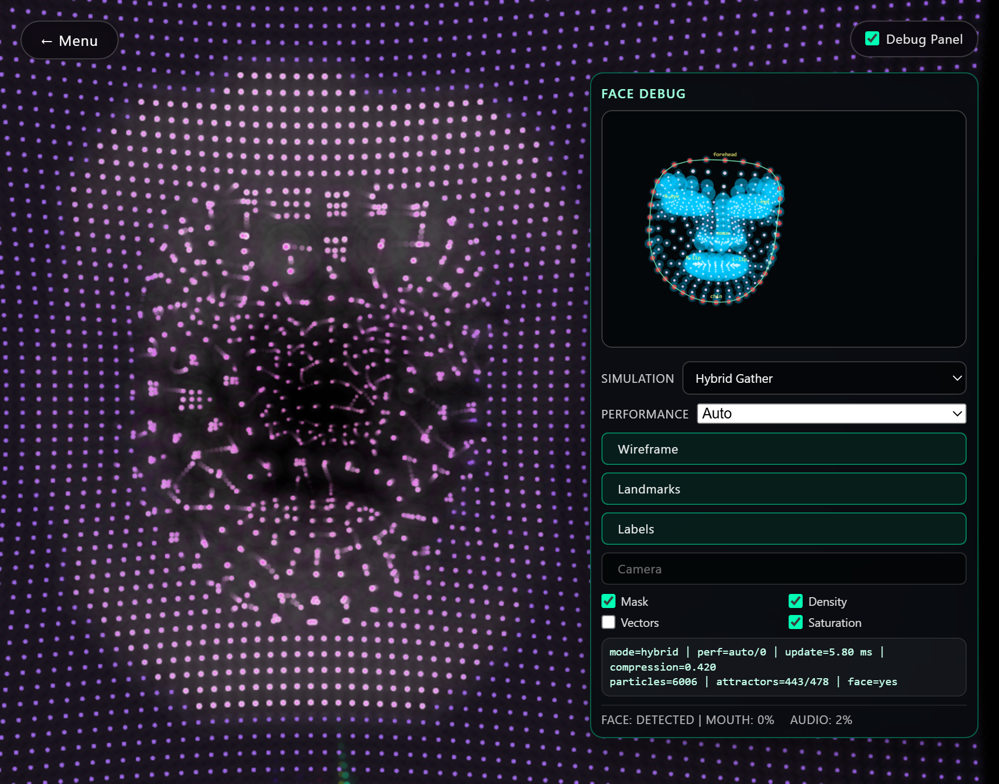

Slide 1
Particle Artwork Tool
Interactive camera-driven particles for visual communication design.
This deck explains why the tool was made, how it supports the design process, and the key UI/UX decisions that shape the interaction.

Slide 2
Why I Made This App
- I wanted a digital mirror that feels expressive, not just decorative.
- Movement becomes composition, turning users into active visual collaborators.
- The project explores motion, emotion, and identity as design material.
- It bridges performance-based interaction with communication design workflows.

Slide 3
How It Supports Design Process
- Works as a motion sketchbook for rapid visual ideation.
- Helps test symbolic interaction (example: heart gesture, heart particle form).
- Prototypes embodied interfaces where body language is the input system.
- Generates source material for posters, campaign visuals, and editorial experiments.
Studio use case: capture stills/clips from live interaction and reuse them in styleframes, storyboards, or campaign explorations.
Slide 4
Design Thinking Process
- Intent and audience: playful experience for classmates and critique contexts.
- Interaction-first prototyping: validate gesture/face behavior before polish.
- Visual behavior tuning: refine glow, density, speed, and color for readability.
- Reflection and legibility: include debug layers to reveal system logic in critique.

Slide 5
Key UI/UX Decisions
- Two-scene menu: hand vs face modes reduce startup complexity.
- Dark visual framing: high contrast keeps focus on particle behavior.
- Camera-hidden interaction: users see abstraction first, not literal camera feed.
- Large contrast-first UI: prioritizes readability during live presentation and critique.
Slide 6
Interaction Clarity Decisions
- Gesture-to-feedback mapping: pinch, clap, and heart each have clear outcomes.
- Integrated debug panels: supports transparency and design explanation.
- Status + back navigation: keeps orientation and reduces user friction.

Slide 7
Development Note (Design Emphasis)
The build process was iterative: prototype interactions, test with camera input, tune visual behavior, then improve interface clarity. Technical systems are present, but the primary goal is design-led communication.
Main takeaway: this is an interactive design tool first, and a technical demo second.
Slide 8
Thank You
Questions, critique, and next-iteration feedback are welcome.
Use Left/Right keys for presenting or share the PDF version for submission.